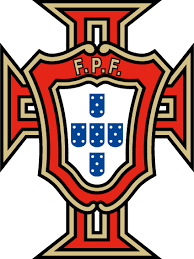
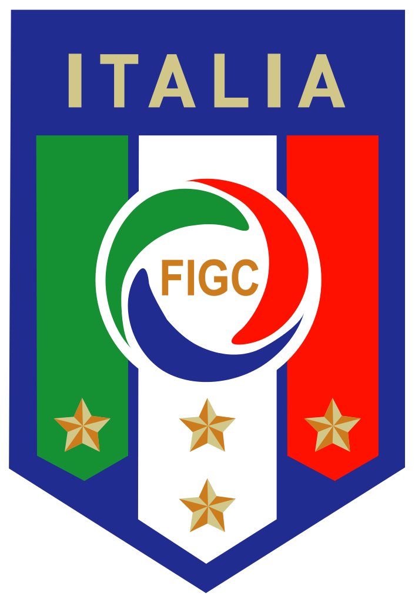

.......
Bulgaria is a side that has produced incredible individual talent over the years but have failed to meet expectations on many occasions. They have failed to qualify for any world cup in the 21st century till date.
They have managed qualification 7 times out of 20 and have placed fourth after losing in the semi-final.
Ireland have managed to qualify for three world cups and have a 100% record of always going past the first round and their best finish coming in 1990 which was hosted by Italy, they reached the Quarter-finals an incredible feat and actually lost to Italy and actually had revenge in the following world cup where they beat Italy in their opening game.
Poland is a team that have qualified for 7 out of 20 world cup and have worked very hard over the years and have the records to show for it, coming third twice in 1974 and 1982. They were a very consistent squad back in the day although they have failed to qualify for the last two world cups and have failed to pass the group stage the last two times they did qualify.
With a very young national team they have qualified for 4 out of 6 world cups since their establishment. And reached the semi-finals of their very first world cup and they came third which was very impressive at their first world cup. They had a very capable team that conceeded only 4 goals in seven games.

Although they were the team that practically invented the sport England failed to enter the first three world cups. They have qualified for 14 out of 20 world cups which is impressive.
England have won the world cup once and it was the time they hosted it back in 1966 and they have come fourth in 1990 hosted by Italy. They have the best club football league in the world.
France is a very strong and decorated side in football, past and present and have hosted two world cups so far and have managed to win one of the world cups that they hosted in 1998, beating a broken Brazil side in the final. They have produced a lot of talented players over the years and hosted the recent Euro 2016 which they came second in losing in the finals to Portugal. They are one of the countries that have participated in the most world cup since it started.

The dutch have qualified for ten world cups and have an incredible feat of getting to the finals five times only Brazil and Italy can compare to that, one difference between holland and those two is that they haven't won a single world-cup, five times entering the finals half the times entering the finals and getting silver every single time. It's a feat some people will never get over and is something they might not be able to change as their quality continues to decrease as they failed to qualify for the Euros 2016.
Portugal have qualified for the world cup six times have placed third and fourth but mostly never make it out of the group stages.With the rise of a new hero Cristiano Ronaldo, portugal have significantly risen and won the Euro 2016 just recently and are a team some call the best in the world.

Spain have qualified for 14 out of 20 world cup and failed to qualify only twice, they have hosted once and have also one once in 2010. Before their win in 2010 spain although qualifying for most never reached the semi-finals. They had everyone's attention in the 2014 world-cup but got knocked out in the group stage after two consecutive losses and a win against australia and havent been a dominant force since then.
Italy have a 95% record in qualifying for this event. They have only failed to qualify for one world cup and they are close rivals. Italy is a side that have a consolation for almost every world-cup they have participated in. Four golds, two silvers and one bronze which is one ot the best only rival to Brazil. IN recent years have not been special but have a good and experienced squad that has a lot of expectations in 2018.
Germany is one of the most consistent and achieved football teams in history. The only team that have qualified for every world cup they entered and have been banned once and didnt participate in the fist world-cup. Have won four world cups, have come second also four times, third three times and fourth once.
Germany have hosted two world cups and are the most recent winners of the world-cup and have produced the best kepper and defender ever with a very solid record. Germany are stiil one of the most consistent teams in recent football.